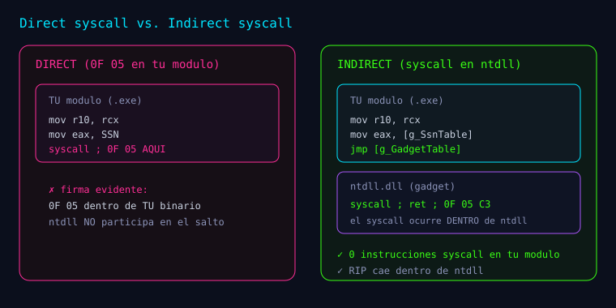

Serie: Kagemusha
"Guía: syscalls en Windows para principiantes"
Guía: syscalls en Windows para principiantes
Esta guía es el punto de partida de la serie Kagemusha. Si nunca has tocado "lo que pasa por debajo" de Windows, no te preocupes: aquí construimos las ideas desde cero, con analogías y ejemplos. Al terminar entenderás qué es una syscall, cómo Windows la ejecuta y qué problema intenta resolver la investigación.
Meta de esta entrada: que puedas leer las siguientes entradas de la serie entendiendo cada término, no memorizándolo.
1. El gran muro: user-mode vs kernel-mode
Windows separa el código en dos mundos:
- User-mode (modo usuario): donde corren tus programas (
.exe, navegador, juegos).
Está aislado: no puede tocar hardware ni la memoria de otros procesos.
- Kernel-mode (modo kernel): donde vive el corazón del sistema (
ntoskrnl.exe).
Tiene privilegios totales: maneja memoria, procesos, disco, red, etc.
El muro entre ambos se llama transición. Para que tu programa abra un archivo o cree un proceso, no lo hace directamente: se lo pide al kernel. Esa petición es una system call.
Piensa en un restaurante:
- Tú (user-mode) eres el cliente. No entras a la cocina.
- El mesero (una función del sistema) recibe tu pedido.
- La cocina (kernel) prepara la comida y te la devuelve.
2. La cadena de capas: de CloseHandle a la syscall

Cuando en C llamas a una función "normal" de Windows, ocurre una cadena de capas. Ejemplo con CloseHandle:
CloseHandle() -> kernel32.dll (API Win32, "cara amable")
|
v
NtClose() -> ntdll.dll (capa nativa)
|
v
syscall -> transicion a KERNEL
|
v
Kernel: NtClose -> ntoskrnl.exe (hace el trabajo real)kernel32.dll(CloseHandle) es la API de alto nivel: cómoda, documentada, estable.ntdll.dll(NtClose) es la capa nativa: funciones que empiezan porNt*.
No está pensada para que la llames directamente, pero es la puerta real al kernel.
- La instrucción
syscalles el "salto" físico al kernel.
Clave: casi todo lo que hace Windows termina, tarde o temprano, en una función
Nt*dentdlly en una instrucciónsyscall.
3. ¿Qué es exactamente un "stub"?
En ntdll, cada función Nt* tiene un pequeño fragmento de código (un stub, "trozo"). En Windows x64 se ve así (simplificado):
ntdll!NtClose:
mov r10, rcx ; copia el 1er argumento a R10
mov eax, 0x0F ; 0x0F = numero de servicio (SSN)
syscall ; <-- entra al kernel
ret ; <-- vuelve al que llamoTres cosas importantes:
mov r10, rcx: en la convención de syscall de x64, el primer argumento va enR10
(no en RCX, porque RCX lo usa la propia instrucción syscall para guardar el retorno).
mov eax, 0x0F: carga enEAXel número de servicio (SSN). Aquí0x0F=NtClose.syscall: la instrucción real que cruza al kernel. En bytes, es0F 05.
4. El SSN: el "número de mesa" del kernel
El kernel no identifica las funciones por nombre, sino por un número: el SSN (System Service Number). Es como el número de mesa en un restaurante: el mesero no grita tu nombre, grita "¡mesa 15!".
En el kernel, la SSDT (System Service Dispatch Table) es una tabla indexada por ese número. syscall con EAX = 0x0F va a SSDT[0x0F] → NtClose.
El detalle crucial para la investigación:
El SSN de una función cambia según la versión/build de Windows.
Esto significa que no puedes confiar en un número escrito "a fuego" (hardcodeado): en otra build, NtClose podría no ser 0x0F. Por eso hay que resolverlo en runtime. En la serie veremos cómo (técnica FreshyCalls).
5. Syscall directa vs. indirecta

Ahora el corazón del asunto. Hay dos formas de "saltar" al kernel desde tu propio código.
Syscall directa (direct syscall)
Tu propio módulo contiene la instrucción syscall:
; dentro de TU binario
mov r10, rcx
mov eax, SSN
syscall ; <-- 0F 05 EN TU MODULO
retFunciona, pero deja una firma: una instrucción 0F 05 dentro de tu ejecutable. Un analista (o un EDR) que inspeccione tu binario la verá y dirá: "este programa ejecuta syscalls por su cuenta".
Syscall indirecta (indirect syscall)
Tu módulo no contiene syscall. En su lugar, salta a un fragmento syscall;ret que ya vive dentro de ntdll:
; dentro de TU binario
mov r10, rcx
mov eax, [ssn] ; SSN resuelto en runtime
jmp [gadget] ; gadget = syscall;ret que esta en ntdllAsí, la instrucción syscall se ejecuta dentro de ntdll (memoria legítima), no en tu módulo. Es la idea del "doble" que da nombre a Kagemusha (影武者, guerrero sombra): el doble actúa en lugar del original.
- Direct:
syscallen tu módulo (fácil de detectar).- Indirect:
syscallenntdll(tu módulo no tiene0F 05).
6. ¿Por qué importa? Hooks y EDR
Un EDR (Endpoint Detection and Response) es un antivirus "de nueva generación" que observa el comportamiento. Una de sus técnicas clásicas es el hooking:
- Coloca un hook (un desvío) al principio de los stubs
Nt*enntdll. - Cuando tu programa llama a
NtClose, en lugar de ejecutarse el stub original, primero
corre el código del EDR, que inspecciona qué vas a pedir y decide si permitirlo.
Si llamas a NtClose normal, pasas por el hook. Las syscalls (directas o indirectas) evitan los hooks de user-mode porque no ejecutan el código del stub que fue modificado.
Importante (honestidad): esquivar hooks de user-mode no te vuelve invisible. El kernel sigue viendo la llamada, y existen otras fuentes de telemetría (callbacks del kernel, ETW, análisis del stack). La serie mide esa visibilidad en vez de ignorarla.
7. Resolver el SSN sin "tocar" el stub: FreshyCalls
Existen varias técnicas para obtener el SSN. La serie usa una sola, por claridad:
FreshyCalls aprovecha un invariante de Windows 10/11:
Los stubs
Nt*enntdllestán colocados en.texten el mismo orden que sus SSN.
Entonces el algoritmo es:
- Enumerar los exports de
ntdllque empiezan porNt(seguidos de mayúscula). - Ordenarlos por dirección virtual (de menor a mayor).
- La posición de cada uno es su SSN (índice 0, 1, 2, ...).
Ventaja: no lees los bytes del stub (a diferencia de técnicas que parsean mov eax, SSN), así que eres inmune a que esos bytes estén "hookeados".
/* idea (pseudocodigo C) */
qsort(NtExports, n, sizeof(*NtExports), comparar_por_direccion_virtual);
for (int i = 0; i < n; i++) {
NtExports[i].ssn = i; /* el indice es el SSN */
}8. El gadget syscall;ret
Para la ejecución indirecta necesitas un fragmento que ya contenga syscall seguido de ret (bytes 0F 05 C3) y que esté en una zona ejecutable legítima, como .text de ntdll. Ese fragmento se llama gadget. Localizar uno válido y comprobar que está dentro de ntdll es parte del trabajo (y se verifica con bytes reales).
9. Glosario rápido
| Término | Significado |
|---|---|
| user-mode | Modo aislado donde corren tus programas |
| kernel-mode | Modo privilegiado del núcleo de Windows |
| syscall | Instrucción (0F 05) que cruza de user a kernel |
| ntdll | DLL nativa con las funciones Nt* |
| stub | Trozo de código dentro de ntdll que prepara la syscall |
| SSN | Número de servicio; indexa la SSDT del kernel |
| SSDT | Tabla del kernel que mapea SSN → función |
| hook | Desvío de código (p. ej. por un EDR) en un stub |
| EDR | Seguridad de endpoint que observa comportamiento |
| direct syscall | syscall ejecutado en tu propio módulo |
| indirect syscall | syscall ejecutado dentro de ntdll |
| FreshyCalls | Resolver SSN ordenando exports Nt* por dirección |
| gadget | Fragmento syscall;ret reutilizable |
10. Riesgos, ética y defensa
Entender esto sirve para defender: quien no comprende la técnica no puede detectarla. La serie documenta cómo se ve desde fuera (stack, telemetría) para que la comunidad defensiva tenga criterios. Reglas sanas:
- Practica solo en tus máquinas virtuales aisladas y con snapshots.
- No publiques muestras ni binarios utilizables; publica conocimiento y detección.
- Documenta y verifica: una afirmación sin prueba es solo una opinión.
11. Cómo sigue la serie
- Guía de syscalls (esta entrada) — contexto para principiantes.
- Kagemusha: indirect syscalls en Windows x64 — tesis y fases M0–M3.
- Kagemusha — Fase 4: ejecución indirecta real — el
syscalldentro dentdll, verificado.
Las próximas fases (generalización a más syscalls, robustez multi-build y análisis de detección) se irán publicando a medida que avance la investigación.
12. Recursos para seguir aprendiendo
- Documentación de la API de Windows y de
ntdll(Microsoft Learn). - WinDbg / cdb para observar los stubs y el registro
RIPen vivo. dumpbiny visores PE para inspeccionar exports y bytes.
Bibliografía y referencias
Documentación oficial
- Microsoft Learn — Ntdll y Register usage / x64 calling convention (
https://learn.microsoft.com/windows/win32/). - Russinovich, Solomon, Ionescu — Windows Internals, 7.ª ed. (Microsoft Press): kernel, SSDT y transición user/kernel.
Investigación y herramientas (técnicas de SSN y syscalls)
- am0nsec & smelly__vx — Hell's Gate (
github.com/am0nsec/HellsGate). - Sektor7 — Halo's Gate (variante que cuenta vecinos).
- crummie5 — FreshyCalls (
github.com/crummie5/FreshyCalls): sort-by-VA, base de esta serie. - thefLink — RecycledGate (
github.com/thefLink/RecycledGate). - MDSec — LayeredSyscall (resolución vía Exception Directory).
- jthuraisamy — SysWhispers (
github.com/jthuraisamy/SysWhispers): patrón de stubs MASM.
Detección y defensa
- Microsoft Learn — Windows Defender Application Control y ETW (telemetría del kernel).
- Documentación de EDR: comportamiento observable (call-stack, callbacks del kernel).
Aprender a romper para poder defender.